飞书消息
一句话，替你发出去。标准权限先显示确认卡；当前任务开启完全访问后，在授权范围内连续执行。
完成管理员部署与飞书应用授权后，用你的飞书账号登录，在同一个窗口里发消息、改文档、做网站、查知识、写代码。默认逐次确认；给当前任务开启完全访问后，在授权范围内自动完成。
非飞书官方软件 · 从零开发的独立开源项目 · 与字节跳动、飞书 / Lark 没有隶属或授权关系（免责声明）
首页只展示当前产品规模和用户能感知的结果。历史研发基线、失败样本和评测方法完整保留在技术文档，不再把小样本和旧版本数字当作核心卖点。
在 i豆 里说，或者在飞书会话旁边的 Agent 里说。
按你的飞书权限，读消息、文档、表格和知识库。
写文档、做网站、生成图片视频、写代码。
默认对外动作之前先问你：发给谁、改哪里、谁能看到。你授权过的，就不再逐次问。
写进文档、发进会话、存进云盘，再自己检查一遍。
建表、写两万条告警、写页面，全部由 i豆 完成：飞书里改一条告警，网站自己跟着变；谁能打开，按人、群、部门授权，或者跟随表格自己的权限。
在 i豆 的编程任务里说一段话：three.js 第一人称射击，三种敌人、两把枪、AI 寻路，带单元测试和自检。GLM-5.3 二十分钟写出第一版；之后换能看图的 MiniMax-M3，每轮说出看到的问题，它截图看画面自己改，前后一共六轮。代码、three.js 和贴图都在一个网站目录里，打开网页就能玩。
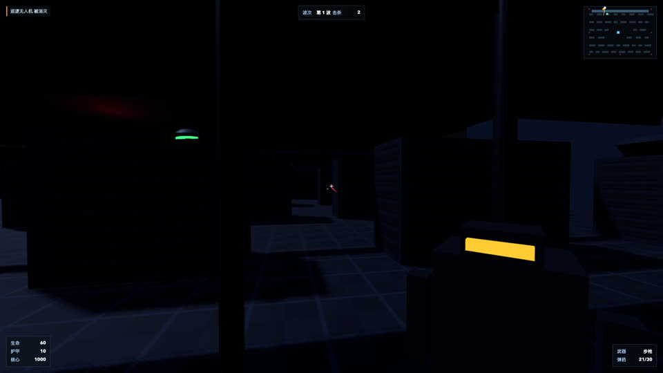
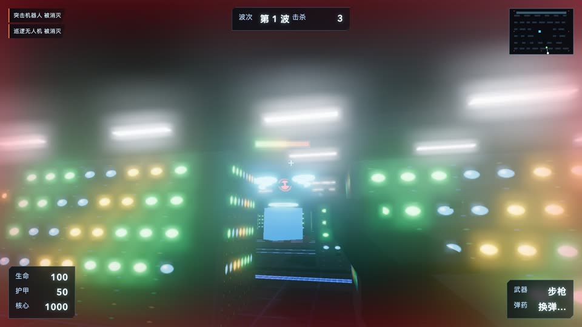
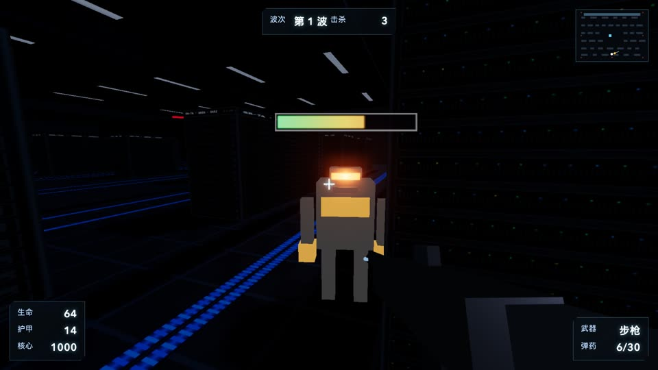
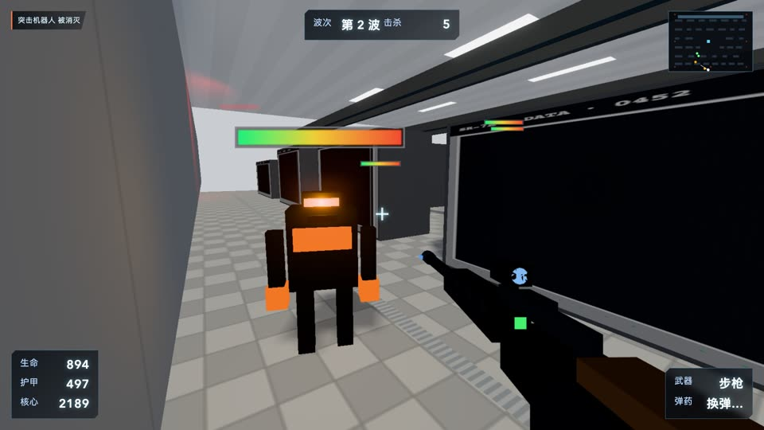
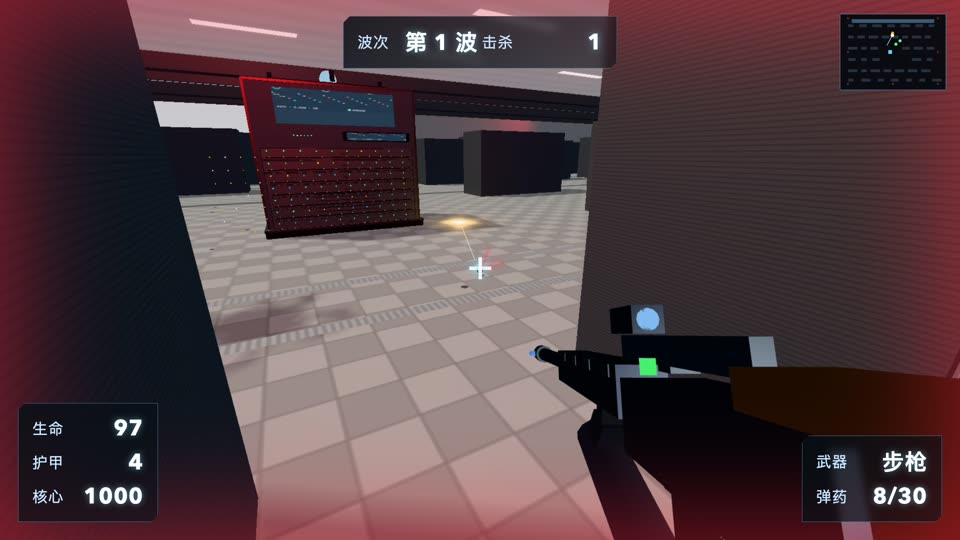
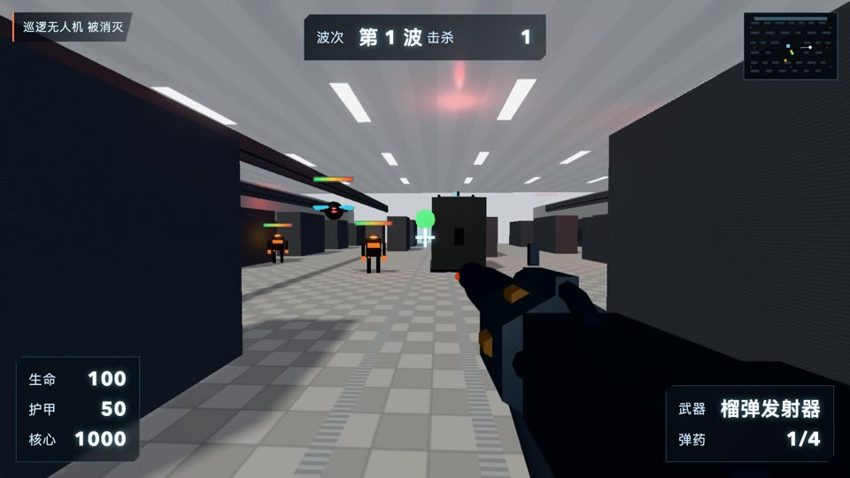
消息、文档、云盘、知识库就在 i豆 旁边打开；电脑上的文件和应用，它也能动手。下面每张图都是 i豆 真实运行时的画面。
一句话，替你发出去。标准权限先显示确认卡；当前任务开启完全访问后，在授权范围内连续执行。
边看边改，改动直接写进飞书文档。
读你电脑上的表格、文档和 PDF，算好的报告写回原来的文件夹。
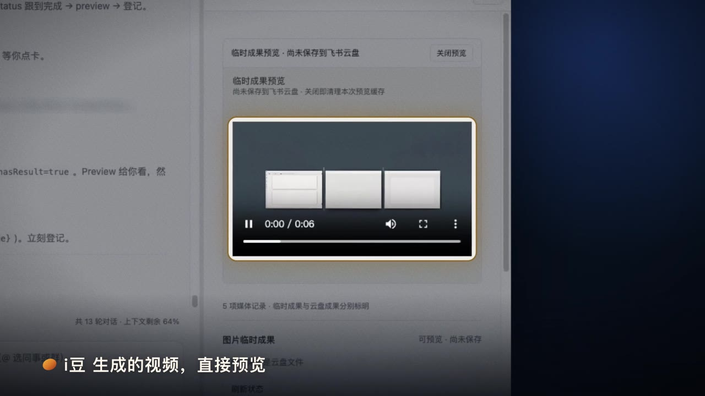
说一句就生成；默认先告诉你模型和规格，视频每次都问你。
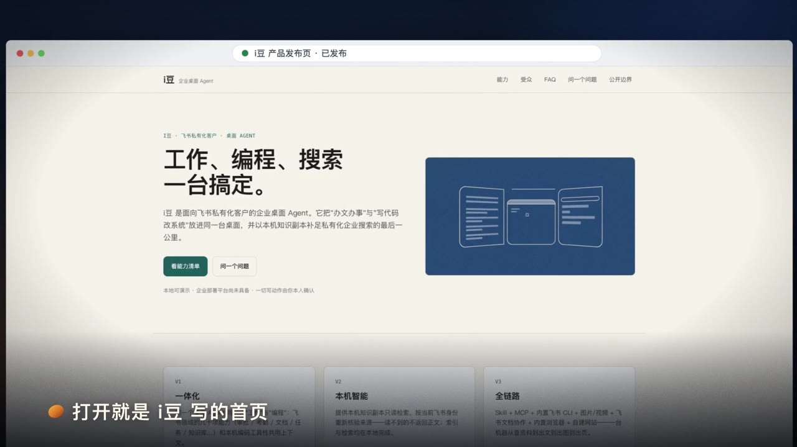
说需求，它写好网站并发布；谁能打开由你选。
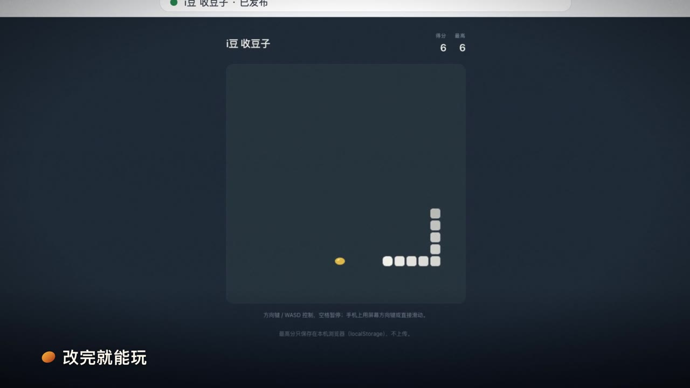
一个模板，改成你的游戏，改完就能玩。
问公司制度，答案带出处；只查你有权读的资料。
说好做什么、几点做，到点自己跑；报告存进你的云空间，还能照你选好的，自动写进文档、发到群里。
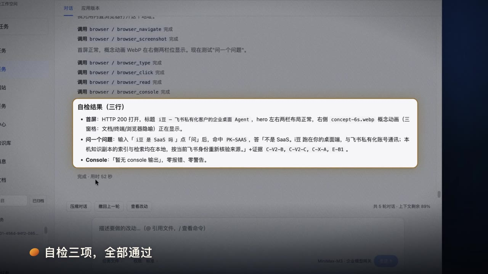
做完，它自己打开网页检查一遍。
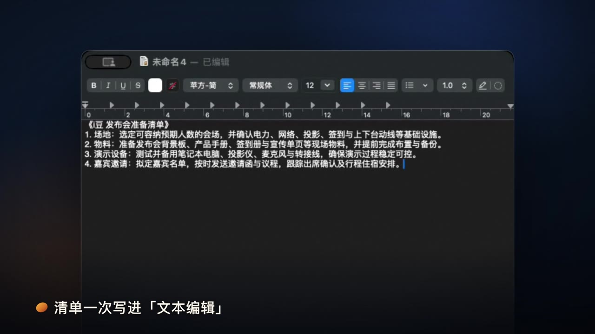
看得见屏幕，也动得了手。默认要进哪个应用操作，先问过你。
i豆 是一层薄薄的产品层：Codex 和飞书 CLI 原样接入、不分叉；飞书文档是事实来源；模型密钥和飞书应用密钥只在企业自己部署的控制面里。
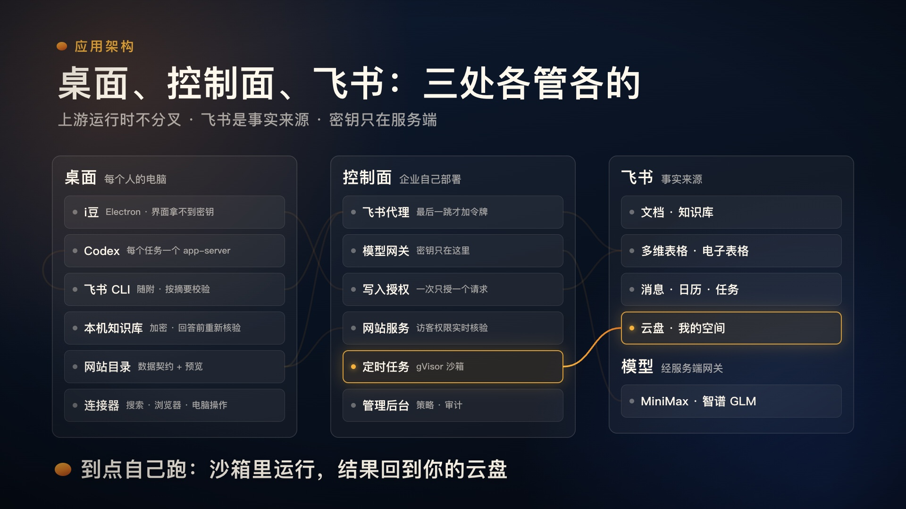
Agent 用随附的飞书 CLI 读，经控制面代理，你的飞书令牌只在最后一跳加上，不进 CLI、Codex 和界面。
每个任务一个 Codex app-server，模型请求走控制面网关；桌面上一把密钥都没有。
默认写入先弹确认卡；完全访问只在当前任务授权范围内自动执行。服务端许可仍只对应一个具体请求。
桌面读表、交给网站服务；访客能不能看，每次实时问飞书。
定时任务在 gVisor 沙箱里运行，凭据由沙箱外的代理加上，结果存进你的云盘。
索引里有一篇文档，不代表你能读它。每次知识回答前，i豆 都以你当前的飞书身份重新核验候选来源；未通过核验的内容不会进入这次回答。
文档、知识库、电子表格、多维表格；也可以粘贴链接主动加入。
按章节无损切片，带版本、内容哈希、租户、读者和权限证据，加密存在本机。
每篇约 800 个区分词的画像，选出最多 8 篇去核验。
4 篇并发；中途换了账号，整次回答作废。
按词的稀有度挑段落，摘录只取刚重读的原文；抄错的链接会被更正。
当前个人本地知识副本上限为 1000 篇 / 64 MiB。更大规模的企业集中索引需要服务端索引与元数据治理，属于后续路线，不把它包装成已经交付。
Agent 的内核是 OpenAI 持续迭代的 Codex。绝大多数团队自己写不出比它更好的 Agent，i豆 不重复造轮子，而是把精力放在飞书一体化和企业可控上。Codex 每一次升级，i豆 的编程和执行能力都随之提升。
现在支持 MiniMax-M3 和 GLM-5.3（经服务端网关，密钥只在服务端），管理员按部门配置可用模型、每日额度和超额后的降级模型；某个模型出问题会自动切到下一个。模型能力与应用版本分开管理，便于企业按需替换。
i豆 随附并锁定 larksuite/cli：消息、文档、电子表格、多维表格、云盘、知识库、日程、任务等能力通过 provider 契约接入。
管理员完成企业应用配置后，员工使用飞书授权登录 i豆，不需要再维护另一套员工密码。
知识回答只引用这次查询中重新核验成功的候选来源；这不把历史缓存当成持续有效的访问证明。
当前个人本地副本在明确的 1000 篇 / 64 MiB 边界内运行；大规模企业集中索引仍在路线图中。
飞书 SaaS 已经随附；飞书接入是一份 provider 契约，私有化部署照同一份契约接入，契约测试已经就位（私有化 provider 开发中）。
网站、小游戏、数据看板，说需求就能做出来，本人确认后发布；网站由企业自己部署的服务端托管，不依赖第三方平台。
飞书 OAuth + PKCE；会话最长 15 分钟，续期要设备密钥签名；管理员一键把人从所有设备签出。
模型密钥、飞书应用密钥只在控制面；你的飞书令牌在最后一跳才加上；定时任务的执行节点拿不到任何密钥。
确认卡片只由人点；一次许可只对应一个请求（摘要绑定、30 秒、只用一次）；删除走红色卡片；生成视频每次都问。
知识库每次回答都以你现在的身份重读；网站按人、群、部门授权，或跟随表格自己的权限。
五档权限对应 Codex 沙箱；标准档没有网络；只放开本任务的 .git，仓库自带的 .codex 规则不执行。
访问凭据按「网站 + 访客」封装在地址里（AES-256-GCM + HMAC）；页面在无源沙箱里运行；发布、改版、刷新数据前先扫描。
生产只认 gVisor：只读根、去掉全部权限、内部网络、资源上限；凭据在沙箱外的出口代理上加。
发布清单签名；随附的 Codex、飞书 CLI、Node 每次启动按摘要校验，从不去 PATH 上找；关掉 Electron 的三个调试与注入开关。
`.295` 的严格发布门禁通过 3,067 / 3,067；当前 55 个测试文件专门覆盖安全与隔离相关边界。审查发现的问题先固化成会失败的回归测试，再进入发布门禁。
用产品自己的后台代码，灌入一个合成的十万人组织：58 万行用量、30 万条审计。成员、组织架构、策略、用量、审计、企业技能、服务状态，每一页都实测过查询耗时。
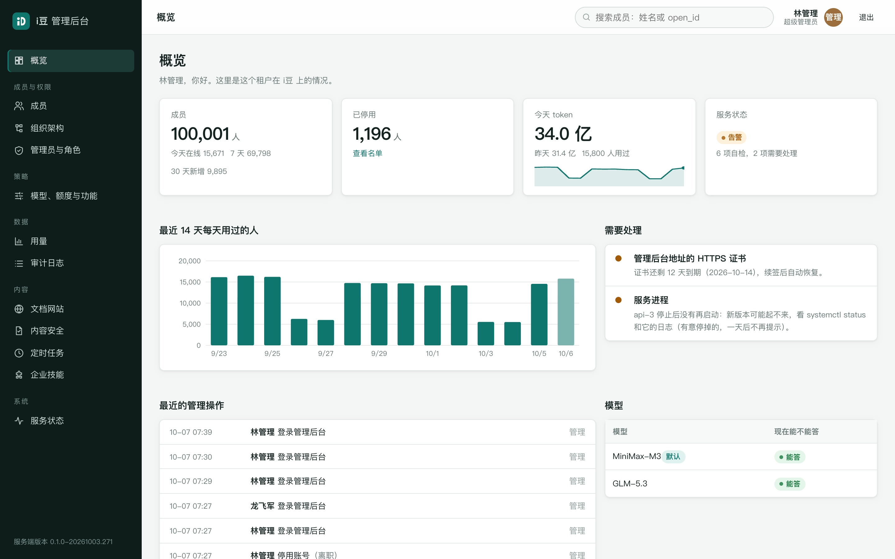
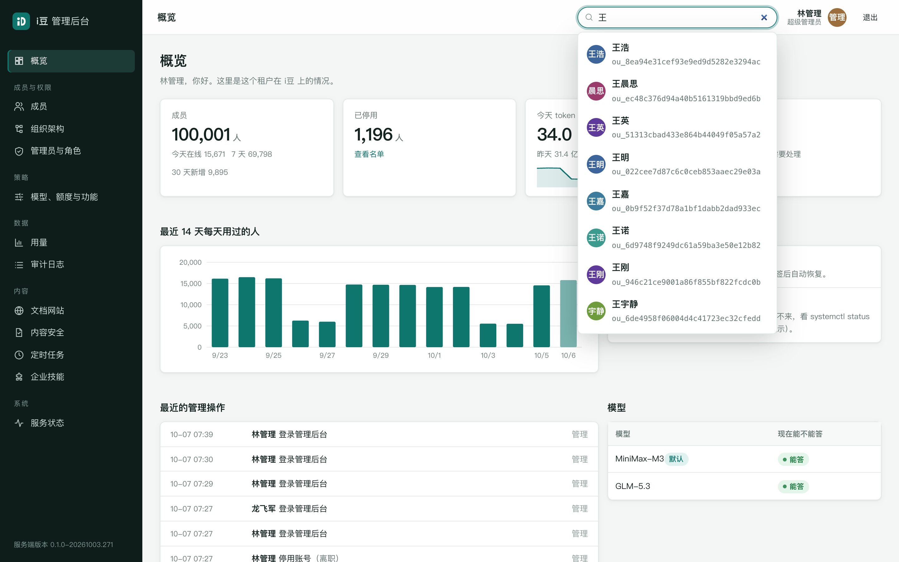
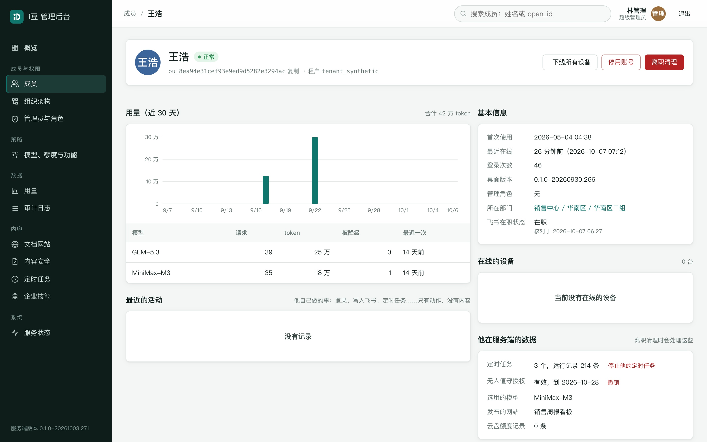
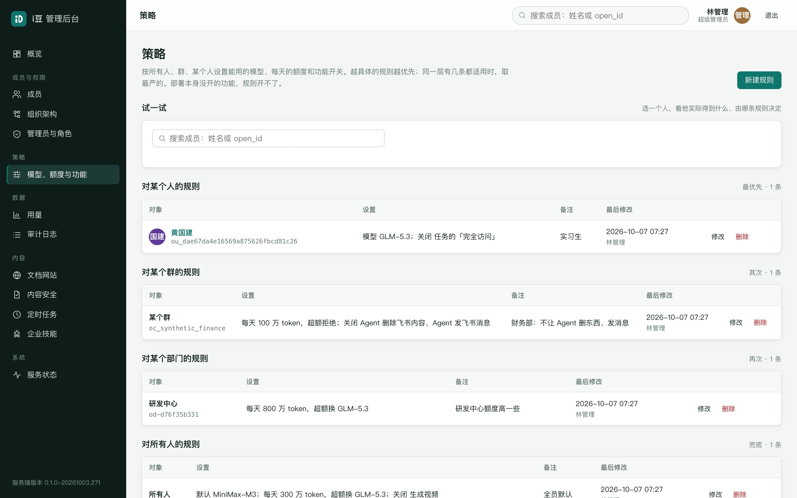
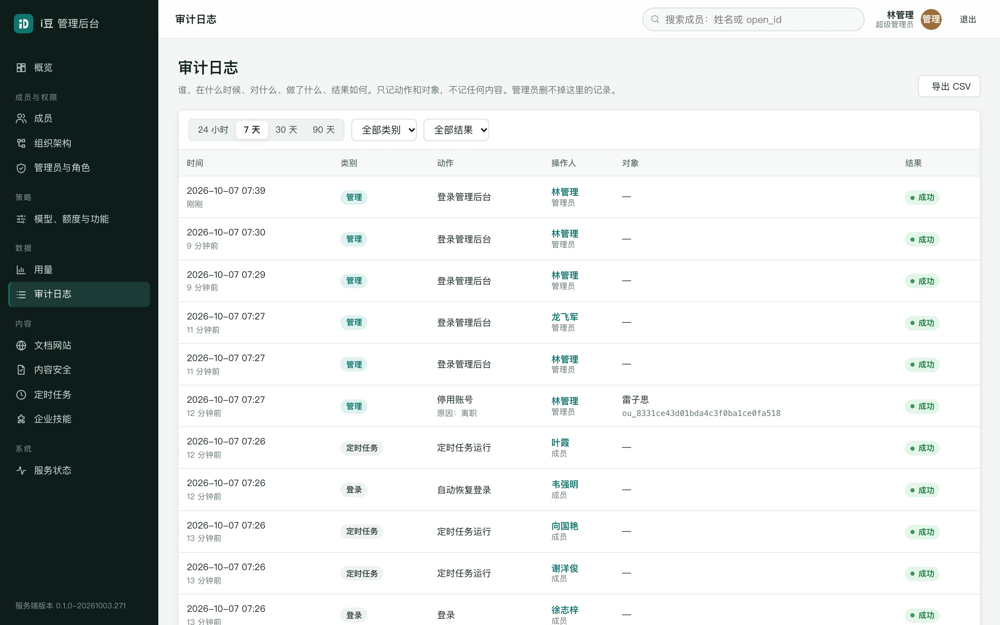
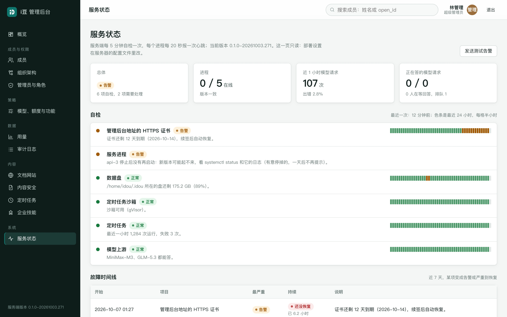
本机 SKILL.md 一键导入；企业技能四眼审核、留 5 个版本、按部门可见、看用量。
内置搜索、浏览器、电脑操作；自己的 stdio 或 HTTP 服务导入即用，审批跟着任务权限走。
本机文件夹或公司 Git 仓库，当作 Codex 插件市场，插件逐个确认后安装。
加一个模块就是一种新动作：确认卡、完全访问检查、一次性许可都现成；测试逐个检查每个动作模块。
SaaS 版已随附；飞书技能从随附的 CLI 现读，不复制进仓库；私有化按同一份契约接入，契约测试现成。
10 个模板、3 种风格；页面用同一套 Table 运行时读表格数据，最多 2 万行、60 个字段。
一句话起草；到点在沙箱里跑，结果写回你选的文档或会话（最多 3 处）。
按人、群、部门、全员：可用模型和默认模型、每日额度和降级模型、11 个功能开关。
只给法务部可见，上架要另一位管理员审。
把内部系统接成工具，每次调用都在任务里留痕。
每天读一张多维表格，写进周报文档。
多一套读 OKR 表格的模板。
照同一份契约实现私有化部署的 provider。
让 Codex 的全部斜杠命令在编程任务里原样可用，新命令不用改代码（ADR 0002）。
管理员部署服务端、配置飞书应用权限后，员工使用飞书 OAuth 登录。
私有化 provider 开发中；服务端本来就部署在企业自己的服务器上，知识副本加密存放在员工本机。
个人知识副本本地加密；当前无需另建检索集群。超过个人副本规模的集中索引仍在规划。
MiniMax-M3、GLM-5.3，按部门配置；接入更多模型在路线图上。
i豆 的源代码以 Apache-2.0 许可公开在 github.com/scott987-cmd/idou，欢迎提问题、提改进。每一个版本仍然要先通过全部自动化测试和桌面验收，才会发到用户手上。
清单由 scripts/third-party-notices.js 生成，每次检查都核对；jszip 是双许可，按 MIT 使用。
npm ci npm run doctor npm start npm run check # 全部测试，不花钱、不连真实飞书
| Codex | 0.157.0 | Apache-2.0 · 不分叉，经 app-server 接入，按摘要锁定 |
| 飞书 CLI | 1.0.96 | MIT · 从锁定的提交编译，摘要不符就拒绝打包 |
| Node.js | 22.23.2 | MIT · 给 Agent 用 |
| Electron | 44.2.0 | MIT · Chromium 许可随包 |
| 服务端 | — | PostgreSQL、nginx、Docker、gVisor 由部署者自装，不随包分发 |
CI 在 macOS 15 和 Ubuntu 24.04 上从源码编译飞书 CLI、核对摘要，再跑全部测试。